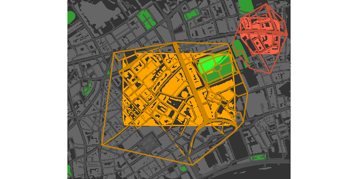
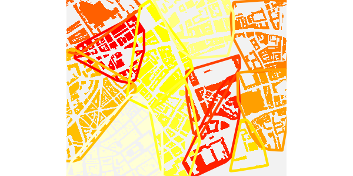
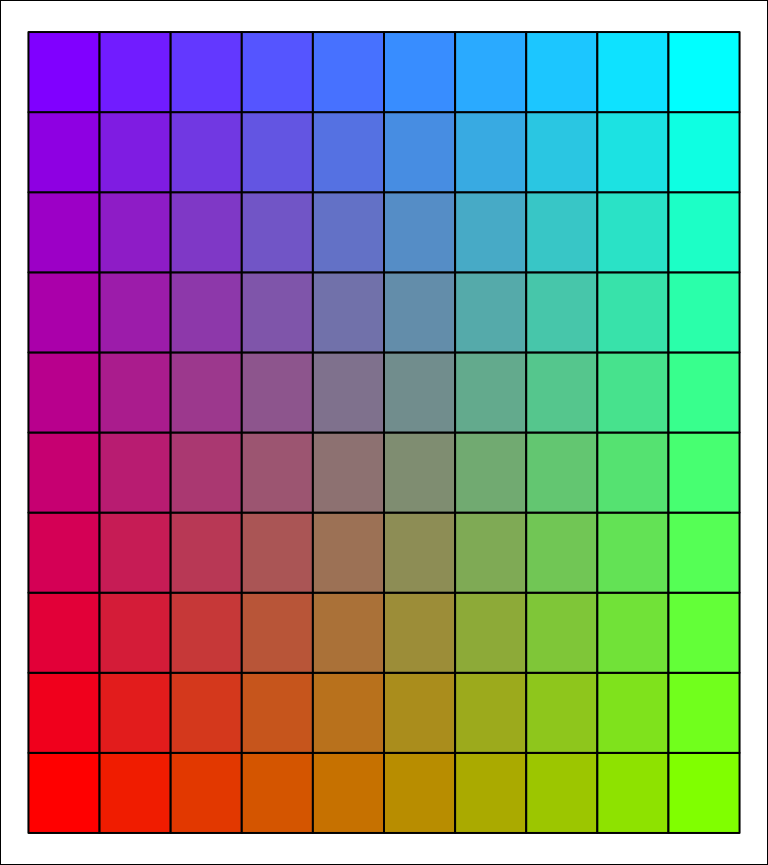
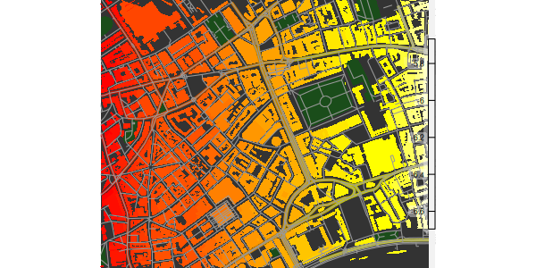
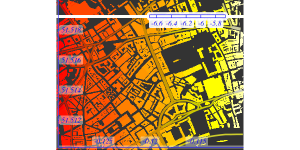

This vignette extends from the vignette (Basic maps) to
demonstrate how osmplotr enables the graphical properties
of OpenStreetMap objects to be modified according to user-provided data.
Categorical data can be plotted by highlighting defined regions with
different colours using add_osm_groups, while continuous
data can be plotted with add_osm_surface.
As in the first vignette, maps produced in this vignette contain data for a small portion of central London, U.K.
1. Categorical data: add_osm_groups
The function add_osm_groups enables spatially-defined
groups to be plotted in different colours. The two primary arguments are
obj, which defines the OSM structure to be used for
plotting the regions, and groups which is a list of
geometric coordinates defining the desired regions. An example of an
obj is the Simple Features (sf)
data.frame of building polygons downloaded in the first
vignette with the following line
dat_B <- extract_osm_objects (key = "building", bbox = bbox)These data may be obtained by simply combining the data provided with the package of residential and non-residential buildings to give all buildings as
dat_B <- rbind (london$dat_BNR, london$dat_BR)The most direct way to define groups is through
specifying coordinates of boundary points:
pts <- cbind (
c (-0.115, -0.125, -0.125, -0.115),
c (51.513, 51.513, 51.517, 51.517)
)
map <- osm_basemap (
bbox = bbox,
bg = "gray20"
)
map <- add_osm_groups (map,
dat_B,
groups = pts,
cols = "orange",
bg = "gray40"
)
print_osm_map (map)
Multiple groups can be defined by passing a list of multiple sets of
point coordinates to the groups argument of
add_osm_groups, and specifying corresponding colours.
pts2 <- cbind (
c (-0.111, -0.1145, -0.1145, -0.111),
c (51.517, 51.517, 51.519, 51.519)
)
map <- osm_basemap (
bbox = bbox,
bg = "gray20"
)
map <- add_osm_groups (map,
dat_B,
groups = list (pts, pts2),
cols = c ("orange", "tomato"),
bg = "gray40"
)
print_osm_map (map)The bg argument specifies the colour of any objects
lying outside the boundaries of the specified groups. If this argument
is not given, then all objects are assigned to the nearest group, so
that the groups fill the entire map.
map <- osm_basemap (
bbox = bbox,
bg = "gray20"
)
map <- add_osm_groups (map,
dat_B,
groups = list (pts, pts2),
cols = c ("orange", "tomato")
)
print_osm_map (map)Now that you’ve seen the general workflow of osmplotr,
let’s repeat the previous code, but streamline it with
magrittr’s %>% function. This allows us to
pipe the functions together instead of re-assigning the map
variable.
library (magrittr)
osm_basemap (
bbox = bbox,
bg = "gray20"
) %>%
add_osm_groups (dat_B,
groups = list (pts, pts2),
cols = c ("orange", "tomato")
) %>%
print_osm_map ()
1.1 Hulls around groups
add_osm_groups includes the argument
make_hull which specifies whether convex hulls should be
fitted around the points defining the provided groups, or
whether the groups already define their own boundaries (the
default behaviour). If a point is added internal to the four points
defining the first of the above groups, then the group boundary will
connect to that point and create a concave shape.
pts <- rbind (pts, c (-0.12, 51.515))
osm_basemap (
bbox = bbox,
bg = "gray20"
) %>%
add_osm_groups (dat_B,
groups = pts,
cols = "orange",
bg = "gray40"
) %>%
print_osm_map ()The previous points started in the south-east and ended in the
north-east, and thus the concave boundary extends in between the two
easterly points. Setting make_hull = TRUE defines groups by
the convex hulls surrounding them, which in this case would revert this
map to the initial map with the group defined by a regular, convex
perimeter.
1.2 Inclusive, exclusive, and bisected polygons
The highlighted regions of the previous maps are irregular because
the default behaviour of add_osm_groups is to include
within a group only those OSM objects which lie entirely within a group
boundary. add_osm_groups has a boundary
argument which defines whether objects should be assigned to groups
inclusively (boundary > 0) or exclusively
(boundary < 0), or whether they should be precisely
bisected by a group boundary (boundary = 0). The previous
maps illustrate the default option (boundary = -1), while
the two other options produce the following maps.
osm_basemap (bbox = bbox, bg = "gray20") %>%
add_osm_groups (dat_B,
groups = list (pts, pts2),
make_hull = TRUE,
cols = c ("orange", "tomato"),
bg = "gray40",
boundary = 1
) %>%
print_osm_map ()The inclusive option (boundary>0) includes all
objects which have any points lying within a boundary, meaning more
objects are included resulting in larger regions than the previous
default exclusive option. Precisely bisecting boundaries produces the
following map.
osm_basemap (
bbox = bbox,
bg = "gray20"
) %>%
add_osm_groups (dat_B,
groups = list (pts, pts2),
make_hull = TRUE,
cols = c ("orange", "tomato"),
bg = "gray40",
boundary = 0
) %>%
print_osm_map ()The ability to combine different kinds of boundaries is particularly useful when highlighting areas which partially contain large polygons such as parks. The parks within the following maps were downloaded with
dat_P <- extract_osm_objects (key = "park", bbox = bbox)(Noting that, as described in the first vignette, Basic maps, both
extract_osm_objects and make_osm_map convert
several common keys to appropriate key-value pairs, so
osm_structures (structure = "park")## structure key value suffix cols
## 1 park leisure park P #647864FF
## 2 background gray20reveals that this key is actually converted to
key = "leisure" and value = "park".) These
data are also provided with the package as
london$dat_P.
Plotting buildings inclusively within each group and overlaying parks bisected by the group boundaries produces the following map:
col_park_in <- rgb (50, 255, 50, maxColorValue = 255)
col_park_out <- rgb (50, 155, 50, maxColorValue = 255)
osm_basemap (
bbox = bbox,
bg = "gray20"
) %>%
add_osm_groups (dat_B,
groups = list (pts, pts2),
make_hull = TRUE,
cols = c ("orange", "tomato"),
bg = "gray40",
boundary = 0
) %>%
add_osm_groups (dat_P,
groups = list (pts, pts2),
cols = rep (col_park_in, 2),
bg = col_park_out,
boundary = 0
) %>%
print_osm_map ()Bisection divides single polygons to form one polygon of points lying
within a given boundary and one polygon of points lying outside the
boundary. The two resultant polygons are often separated by visible gaps
between locations at which they are defined. Because the layers of a
plot are progressively overlaid, such gaps can be avoided by initially
plotting underlying layers using add_osm_objects prior to
grouping objects:
map <- osm_basemap (
bbox = bbox,
bg = "gray20"
) %>%
add_osm_objects (dat_P,
col = col_park_out
) %>%
add_osm_groups (dat_P,
groups = list (pts, pts2),
cols = rep (col_park_in, 2),
bg = col_park_out,
boundary = 0
) %>%
add_osm_groups (dat_B,
groups = list (pts, pts2),
make_hull = TRUE,
cols = c ("orange", "tomato"),
bg = "gray40",
boundary = 0
)
map %>%
print_osm_map ()Bisections with boundary = 0 will only be as accurate as
the underlying OSM data. This example was chosen to highlight that
bisection may be inaccurate if actual OSM points do not lie near to a
desired bisection line. The larger a map, the less visually evident are
likely to be any such inaccuracies. Finally, note that the plot order
was changed to allow the building within the park to be overlaid upon
the grass surfaces. Plot order, whether controlled manually or with
make_osm_map, may often have to be tweaked to appropriately
visualise all objects.
The boundary argument has no effect if bg
is not given, because in this case all objects will be assigned to a
group and there will be no boundaries between groups and other,
non-grouped objects.
1.3 Adjusting colours with adjust_colours
The adjust_colours function allows different groups to
be highlighted with slightly different colours for different kinds of
OSM objects. For example, the following code adds highways to the above
map in slightly darkened versions of the highlight colours (using
boundary = 1, so any highways with any points lying within
the bounding box are included in the groups):
# create separate data for all highways and primary highways
dat_H <- rbind (london$dat_H, london$dat_HP)
dat_HP <- london$dat_HP
# darken colours by aboud 20%
cols_adj <- adjust_colours (c ("orange", "tomato"),
adj = -0.2
)
map %>%
add_osm_groups (dat_HP,
groups = list (pts, pts2),
make_hull = TRUE,
cols = cols_adj,
bg = adjust_colours ("gray40",
adj = -0.4
),
boundary = 1, size = 2
) %>%
add_osm_groups (dat_H,
groups = list (pts, pts2),
make_hull = TRUE,
cols = cols_adj,
bg = adjust_colours ("gray40",
adj = -0.2
),
boundary = 1,
size = 1
) %>%
print_osm_map ()
And of course adjust_colours ("gray40", adj = -0.2) is
nothing other than “gray32”, and adj = -0.4 gives
“gray24”.
1.4 Dark-on-Light Highlights
A particularly effective way to highlight single regions within a map is through using dark colours upon otherwise light coloured maps.
osm_basemap (bbox = bbox, bg = "gray95") %>%
add_osm_groups (dat_B,
groups = pts,
cols = "gray40",
bg = "gray85",
boundary = 1
) %>%
add_osm_groups (dat_H,
groups = pts,
cols = "gray20",
bg = "gray70",
boundary = 0
) %>%
add_osm_groups (dat_HP,
groups = pts,
cols = "gray10",
bg = "white",
boundary = 0,
size = 1
) %>%
print_osm_map ()1.5 Visualising clustering data
One of the most likely uses of add_osm_groups is to
visualise statistical clusters. Clustering algorithms will generally
produce membership lists which may be mapped onto spatial locations.
Each cluster can be defined as a matrix of points in a single list of
groups. A general approach is illustrated here with
groups defined by single, randomly generated points.
set.seed (2)
ngroups <- 12
x <- bbox [1, 1] + runif (ngroups) * diff (bbox [1, ])
y <- bbox [2, 1] + runif (ngroups) * diff (bbox [2, ])
groups <- as.list (data.frame (t (cbind (x, y))))(The last line just transforms each row of the matrix into a list item.) Having generated the points, a map of corresponding clusters can be generated by the following simple code.
osm_basemap (
bbox = bbox,
bg = "gray95"
) %>%
add_osm_groups (dat_B,
groups = groups,
cols = rainbow (length (groups))
) %>%
print_osm_map ()Although individual groups will generally be defined by collections
of multiple points, this example illustrates that they can also be
defined by single points. In such cases, the bg option
should of course be absent, so that all remaining points are allocated
to the nearest groups.
This map also illustrates the kind of visual mess that may arise in
attempts to specify colours, particularly because the sequence of
colours passed to add_osm_groups will generally not map on
to any particular spatial order, so even if a pleasing colour scheme is
submitted, the results may still be less than desirable. Although it may
be possible to devise pleasing schemes for small numbers of groups,
manually defined colour schemes are likely to become impractical for
larger numbers of groups.
osm_basemap (
bbox = bbox,
bg = "gray95"
) %>%
add_osm_groups (dat_B,
groups = groups,
border_width = 2,
cols = heat.colors (length (groups))
) %>%
print_osm_map ()
Note the submitting any positive values to the additional
border_width argument causes add_osm_groups to
drawn convex hull borders around the different groups. Even this is not
sufficient, however, to render the result particularly visually pleasing
or intelligible. To overcome this, add_osm_groups includes
an option described in the following section to generate spatially
sensible colour schemes for colouring distinct groups.
1.6 The Colour Matrix: Colouring Several Regions
An additional argument which may be passed to
add_osm_groups is colmat, an abbreviation of
‘colour matrix’. If set to true (the default is FALSE),
group colours are specified by the function colour_mat.
This function takes a vector of four or more colours as input, wraps
them around the four corners of a rectangular grid, and spatially
interpolates a chromatically regular grid between these corners. To
visual different schemes, it has a plot argument:
cmat <- colour_mat (rainbow (4), plot = TRUE)
This grid illustrates the default colours, rainbow (4).
The two-dimensional colour field produced by colour_mat may
also be rotated by a specified number of degrees using the
rotate argument.
cmat <- colour_mat (rainbow (4), n = c (4, 8), rotate = 90, plot = TRUE)This example also illustrates that the size of colour matrices may
also be arbitrarily specified. Using the colmat option in
add_osm_groups enables the previous maps to be redrawn like
this:
osm_basemap (
bbox = bbox,
bg = "gray95"
) %>%
add_osm_groups (dat_B,
groups = groups,
border_width = 2,
colmat = TRUE,
cols = c ("red", "green", "yellow", "blue"),
rotate = 180
) %>%
print_osm_map ()Note both that when add_osm_groups is called with
colmat = TRUE, then cols need only be of
length 4, to specify the four corners of the colour matrix, and also
that the rotate argument can be submitted to
add_osm_groups and passed on to
colour_mat.
1.7 Bounding areas within named highways
As explained in the first vignette, Basic maps, the
function connect_highways takes a list of OSM highway names
and a bounding box, and returns the boundary of a polygon encircling the
named highways. This can be used to highlight selected regions simply by
naming the highways which encircle them, producing maps which look like
this:
highways <- c (
"Monmouth.St", "Short.?s.Gardens", "Endell.St", "Long.Acre",
"Upper.Saint.Martin"
)
highways1 <- connect_highways (highways = highways, bbox = bbox)
highways <- c ("Endell.St", "High.Holborn", "Drury.Lane", "Long.Acre")
highways2 <- connect_highways (highways = highways, bbox = bbox)
highways <- c ("Drury.Lane", "High.Holborn", "Kingsway", "Great.Queen.St")
highways3 <- connect_highways (highways = highways, bbox = bbox)Note the use of the regex
character ? in the first list of highway names, denoting
the previous character as optional. This is necessary here because there
are OSM sections named both “Shorts Gardens” and “Short’s Gardens”.
class (highways1)## [1] "matrix" "array"
nrow (highways1)## [1] 41
nrow (highways2)## [1] 33
nrow (highways3)## [1] 53connect_highways returns a list of
SpatialPoints representing the shortest path that
sequentially connects all of the listed highways. (Connecting all listed
highways may not necessarily be possible, in which case warnings will be
issued. As described in the first vignette, Basic maps,
connect_highways also has a plot option
allowing problematic cases to be visually inspected and hopefully
corrected.)
These lists of highway coordinates can then be used to highlight the areas they encircle. First group the highways and establish a colour scheme for the map:
groups <- list (highways1, highways2, highways3)
cols_B <- c ("red", "orange", "tomato") # for the 3 groups
cols_H <- adjust_colours (cols_B, -0.2)
bg_B <- "gray40"
bg_H <- "gray60"And then plot the map.
osm_basemap (bbox = bbox, bg = "gray20") %>%
add_osm_objects (dat_P,
col = col_park_out
) %>%
add_osm_groups (dat_B,
groups = groups,
boundary = 1,
bg = bg_B,
cols = cols_B
) %>%
add_osm_groups (dat_H,
groups = groups,
boundary = 1,
bg = bg_H,
cols = cols_H
) %>%
add_osm_groups (dat_HP,
groups = groups,
boundary = 0,
cols = cols_H,
bg = bg_H,
size = 1
) %>%
print_osm_map ()These encircling highways are included in the london
data provided with osmplotr.
2. Continuous data: add_osm_surface
The add_osm_surface function enables a continuous data
surface to be overlaid on a map. User-provided data is spatially
interpolated across a map region and OSM items coloured according to a
specified continuous colour gradient. The data must be provided as a
data frame with three columns, ‘(x,y,z)’, where ‘(x,y)’ are the
coordinates of points at which data are given, and ‘z’ are the values to
be spatially interpolated across the map.
A simple data frame can be constructed as
n <- 5
x <- seq (bbox [1, 1], bbox [1, 2], length.out = n)
y <- seq (bbox [2, 1], bbox [2, 2], length.out = n)
dat <- data.frame (
x = as.vector (array (x, dim = c (n, n))),
y = as.vector (t (array (y, dim = c (n, n)))),
z = x * y
)
head (dat)## x y z
## 1 -0.130 51.5100 -6.696300
## 2 -0.125 51.5100 -6.439063
## 3 -0.120 51.5100 -6.181800
## 4 -0.115 51.5100 -5.924512
## 5 -0.110 51.5100 -5.667200
## 6 -0.130 51.5125 -6.696300And then passed to add_osm_surface
osm_basemap (
bbox = bbox,
bg = "gray20"
) %>%
add_osm_surface (dat_B,
dat = dat,
cols = heat.colors (30)
) %>%
print_osm_map ()At present, add_osm_surface generates an warning if it
is applied more than once to any one kind of Spatial object
(polygons or lines), as illustrated in the following code (in which both
dat_H and dat_HP are of class
SpatialLinesDataFrame:
osm_basemap (bbox = bbox, bg = "gray20") %>%
add_osm_surface (dat_HP,
dat = dat,
cols = heat.colors (30)
) %>%
add_osm_surface (dat_H,
dat = dat,
cols = heat.colors (30)
)
This is because add_osm_surface creates new
ggplot2 aesthetic schemes for each kind of object, and
these schemes are not intended to be modified or replaced within a
single plot. The above map may still be printed, but the warning means
that the last provided colour scheme will be applied to all objects of
that class. This means that osmplotr can only overlay two
distinct colour schemes: one for all objects of class
SpatialLines, and a potentially different one for all
objects of class SpatialPolygons.
Of course, any number of additional objects may be overlaid with
add_osm_objects, for example,
cols_adj <- adjust_colours (heat.colors (30), -0.2)
map <- osm_basemap (
bbox = bbox,
bg = "gray20"
) %>%
add_osm_surface (dat_B,
dat = dat,
cols = heat.colors (30)
) %>%
add_osm_surface (dat_HP,
dat = dat,
cols = cols_adj,
size = 1.5
) %>%
add_osm_objects (dat_P,
col = rgb (0.1, 0.3, 0.1)
) %>%
add_osm_objects (dat_H,
col = "gray60"
)
map %>%
print_osm_map ()2.1 Colourbar legends for data surfaces
A colourbar legend for the surface may be added with
add_colourbar. As with add_axes, this function
is provided separately to allow colourbars to be overlaid only after all
desired map items have been added. The only parameters required for
add_colourbar are the limits of the data
(zlims) and the colours (along with the map, a
modified version of which is returned).
map %>%
add_colourbar (
cols = terrain.colors (100),
zlims = range (dat$z)
) %>%
print_osm_map ()
Note that the colours submitted to add_colourbar need
not be the same as those used to plot the surface. (Although using
different colours is rarely likely to be useful.) As for
add_axes, and explained in the first vignette, Basic maps, the
transparency of the boxes surrounding the elements of the colourbar may
be controlled by specifying the value of alpha. Both
alignment and position may also be adjusted, as illustrated in this
example.
cols_adj <- adjust_colours (heat.colors (30), -0.2)
osm_basemap (
bbox = bbox,
bg = "gray20"
) %>%
add_osm_surface (dat_B,
dat = dat,
cols = heat.colors (30)
) %>%
add_osm_surface (dat_HP,
dat = dat,
cols = cols_adj,
size = 1.5
) %>%
add_colourbar (
cols = heat.colors (100),
zlims = range (dat$z),
alpha = 0.9,
vertical = FALSE,
barwidth = c (0.1, 0.12),
barlength = c (0.5, 0.9),
text_col = "blue",
fontsize = 5,
fontface = 3,
fontfamily = "Times"
) %>%
add_axes (
colour = "blue",
fontsize = 5,
fontface = 3,
fontfamily = "Times"
) %>%
print_osm_map ()
Both barwidth and barlength can be
specified in terms of one or two numbers. A single value for
barwidth determines its relative width (0-1) from the
border (the right side if vertical = TRUE or the top if
vertical = FALSE), while two values determine the relative
start and end positions of the sides of the bar. A single value for
barlength produces a bar of the given length centred in the
middle of the map, while two values determine its respective upper and
lower points (for vertical = TRUE) or left and right points
(for vertical = FALSE).
This example also demonstrates how colours, sizes, and other font
characteristics of text labels can be specified (with
text_col determining the colour of all elements of the
colourbar other than the gradient itself). Finally, as for
add_axes, the text labels of colourbars are not currently
able to be rotated because ggplot2 does not permit rotation
for the geom_label function used to produce these
labels.
2.1 Surfaces and data perimeters
It may often be that user-provided data only extend across a portion
of a map, leaving a perimeter beyond the data boundary for which
interpolation should not be applied. add_osm_surface has a
bg parameter specifying a background colour for objects
beyond the perimeter of the data surface. Passing this parameter to
add_osm_surface causes objects beyond the data perimeter to
be coloured within this ‘background’ colour.
To illustrate, trim the above data to within a circular range of the centre of the map.
## [1] 0.00000000 0.01118034Remove from dat all rows translating to
d>0.01:
dat <- dat [which (d < 0.01), ]
cols_adj <- adjust_colours (heat.colors (30), -0.2)
osm_basemap (
bbox = bbox,
bg = "gray20"
) %>%
add_osm_surface (dat_B,
dat = dat,
cols = heat.colors (30),
bg = "gray40"
) %>%
add_osm_surface (dat_HP,
dat = dat,
cols = cols_adj,
size = c (1.5, 0.5),
bg = "gray70"
) %>%
print_osm_map ()(The perimeter is irregular because of the positions of the points in
dat.)
2.3 Further control of surface appearance
The final add_osm_surface call in the above code (for
dat_HP) illustrates additional parameters that may be
passed for further control of map appearance. In this case, the two
size parameters control the size of the lines within the
data surface and beyond its perimeter. Single values may also be passed,
in which case they determine the width of lines in both cases. One or
two shape parameters may also be passed, with these also
determining the shapes of SpatialPoints, as illustrated in
the next example, which overlays trees on the map.
Both lines and points use the same ggplot2 colour
gradient, and so adding the second of these again generates an error and
means that the actual colour scheme will be determined by the final call
to add either lines or points.
dat_T <- extract_osm_objects (key = "tree", bbox = bbox)
osm_basemap (
bbox = bbox,
bg = "gray20"
) %>%
add_osm_surface (dat_HP,
dat = dat,
cols = terrain.colors (30),
size = c (1.5, 0.5),
bg = "gray70"
) %>%
add_osm_surface (dat_H,
dat = dat,
cols = terrain.colors (30),
size = c (1, 0.5),
bg = "gray70"
) %>%
add_osm_surface (dat_T,
dat = dat,
cols = heat.colors (30),
bg = "lawngreen",
size = c (3, 2),
shape = c (8, 1)
) %>%
print_osm_map ()The first two colour specifications (terrain.colors)
have been ignored, and all added items are coloured according to the
final value of heat.colors (30). Other aspects such as line
sizes and point shapes are nevertheless respected.